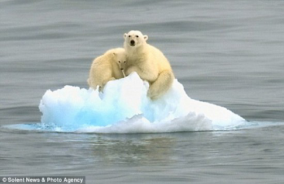
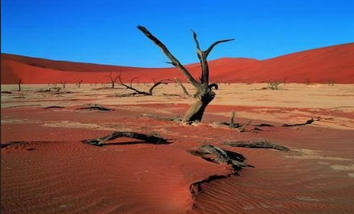

(一)全球气候变暖
由于人口的增加和人类生产活动的规模越来越大，向大气释放的二氧化碳(CO2)、 甲烷(CH4)、一氧化二氮(N2O)、氯氟碳化合物(CFC)、四氯化碳(CCl4)、一氧化碳(CO)等温室气体不断增加，导致大气的组成发生变化。大气质量受到影响，气候有逐渐变暖的趋势。 由于全球气候变暖，将会对全球产生各种不同的影响，较高的温度可使极地冰川融化，海平面每10年将升高6厘米，因而将使一些海岸地区被淹没。全球变暖也可能影响到降雨和大气环流的变化，使气候反常，易造成旱涝灾害，这些都可能导致生态系统发生变化和破坏，全球气候变化将对人类生活产生一系列重大影响。
(二)臭氧层的耗损与破坏
在离地球表面10~50千米的大气平流层中集中了地球上90%的臭氧气体，在离地面25千米处臭氧浓度最大，形成了厚度约为3毫米的臭氧集中层，称为臭氧层。它能吸收太阳的紫外线，以保护地球上的生命免遭过量紫外线的伤害，并将能量贮存在上层大气，起到调节气候的作用。但臭氧层是一个很脆弱的大气层，如果
进入一些破坏臭氧的气体，它们就会和臭氧发生化学作用，臭氧层就会遭到破坏。 臭氧层被破坏，将使地面受到紫外线辐射的强度增加，给地球上的生命带来很大的危害。研究表明，紫外线辐射能破坏生物蛋白质和基因物质脱氧核糖核酸，造成细胞死亡;使人类皮肤癌发病率增高;伤害眼睛，导致白内障而使眼睛失明;抑制植物如大豆、瓜类、蔬菜等的生长，并穿透10米深的水层，杀死浮游生物和微生物，从而危及水中生物的食物链和自由氧的来源，影响生态平衡和水体的自净能力。
(三)生物多样性减少
《生物多样性公约》指出，生物多样性"是指所有来源的形形色色的生物体，这些来源包括陆地、海洋和其他水生生态系统及其所构成的生态综合体;它包括物种内部、物种之间和生态系统的多样性。"在漫长的生物进化过程中会产生一些新的物种，同时，随着生态环境条件的变化，也会使一些物种消失。所以说，生物多样性是在不断变化的。 近百年来，由于人口的急剧增加和人类对资源的不合理开发，加之环境污染等原因，地球上的各种生物及其生态系统受到了极大的冲击，生物多样性也受到了很大的损害。估计到21世纪初，全世界野生生物的损失可达其总数的15%~30%。在中国，由于人口增长和经济发展的压力，对生物资源的不合理利用和破坏，生物多样性所遭受的损失也非常严重，大约已有200个物种已经灭绝;估计约有5000种植物已处于濒危状态，这些约占中国高等植物总数的20%;大约还有398种脊椎动物也处在濒危状态，约占中国脊椎动物总数的7.7%左右。因此，保护和拯救生物多样性以及这些生物赖以生存的生活条件，同样是摆在我们面前的重要任务。
(四)酸雨蔓延
酸雨是指大气降水中酸碱度(PH值)低于5.6的雨、雪或其他形式的降水。这是大气污染的一种表现。 
酸雨对人类环境的影响是多方面的。酸雨降落到河流、湖泊中，会妨碍水中鱼、虾的成长，以致鱼虾减少或绝迹;酸雨还导致土壤酸化，破坏土壤的营养，使土壤贫瘠化，危害植物的生长，造成作物减产，危害森林的生长。此外，酸雨还腐蚀建筑材料，有关资料说明，近十几年来，酸雨地区的一些古迹特别是石刻、石雕或铜塑像的损坏超过以往百年以上，甚至千年以上。 世界已有三大酸雨区。中国华南酸雨区是唯一尚未治理的 。
(五)森林锐减
在今天的地球上，我们的绿色屏障--森林正以平均每年4000平方公里的速度消失。森林的减少使其涵养水源的功能受到破坏，造成了物种的减少和水土流失，对二氧化碳的吸收减少进而又加剧了温室效应。
(六)土地荒漠化
全球陆地面积占60%，其中沙漠和沙漠化面积29%。每年有600万公顷的土地变成沙漠。 经济损失每年423亿美元。全球共有干旱、半干旱土地50亿公顷，其中33亿遭到荒漠化威胁。致使每年有600万公顷的农田、900万公顷的牧区失去生产力。人类文明的摇篮底格里斯河、幼发拉底河流域，已由沃土变成荒漠。中国的黄河流域，水土流失亦十分严重。
(七)大气污染
大气污染的主要因子为悬浮颗粒物、一氧化碳、臭氧、二氧化碳、氮氧化物、铅等。大气污染导致每年有30-70万人因烟尘污染提前死亡，2500万的儿童患慢性喉炎，400-700万的农村妇女儿童受害。
(八)水污染
水是我们日常最需要，也是接触最多的物质之一，然而就是水如今也成了危险品。
(九)海洋污染
人类活动使近海区的氮和磷增加50%-200%;过量营养物导致沿海藻类大量生长;
波罗的海、北海、黑海、东中国海(东海)等出现赤潮。海洋污染导致赤潮频繁发生，破坏了红树林、珊瑚礁、海草，使近海鱼虾锐减，渔业损失惨重。
(十)危险性废物越境转移
危险性废物是指除放射性废物以外，具有化学活性或毒性、爆炸性、腐蚀性和其他对人类生存环境存在具有害特性的废物。
美国在资源保护与回收法中规定，所谓危险废物是指一种固体废物和几种固体的混合物，因其数量和浓度较高，可能造成或导致人类死亡，或引起严重的难以治愈疾病或致残的废物。
our team

Bradley Grosh
Were dolor in hendrerit in vulputate velit esse molestie con sequat

david austin
Were dolor in hendrerit in vulputate velit esse molestie con sequat

Patrick Pool
Were dolor in hendrerit in vulputate velit esse molestie con sequat

Dayle Peters
Were dolor in hendrerit in vulputate velit esse molestie con sequat
Advantages
01
Decking concrete Kool
How wonderful it is that nobody need wait a single moment before starting to improve the world.
02
Decking concrete Kool
How wonderful it is that nobody need wait a single moment before starting to improve the world.
03
Decking concrete Kool
How wonderful it is that nobody need wait a single moment before starting to improve the world.